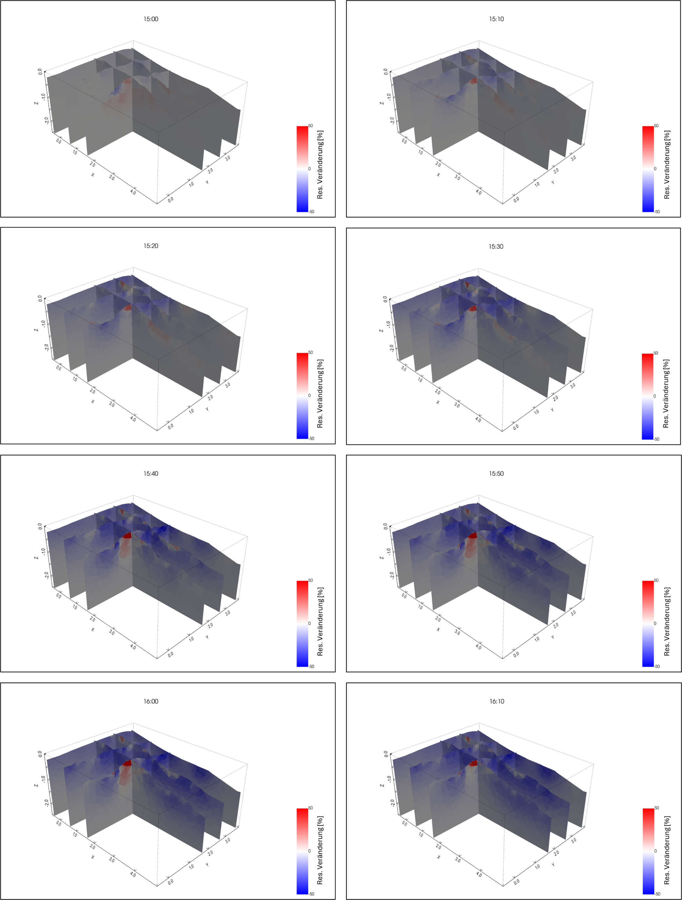

Spatial-temporal evolution of the resistivity distribution during irrigation.
Die Animation zeigt die relative Veränderung der Resistivität (in %) im Vergleich zum Zustand vor der Beregnung. Blaue Farbtöne weisen auf eine Abnahme der Resistivität hin, die hauptsächlich durch einen steigenden Wassergehalt verursacht wird. Rote Farbtöne weisen auf eine Zunahme des spezifischen Widerstands hin.
